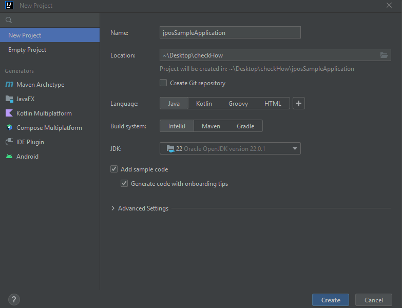
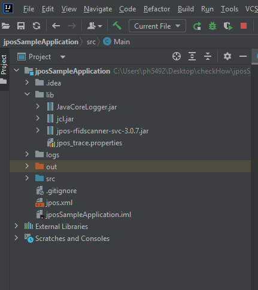
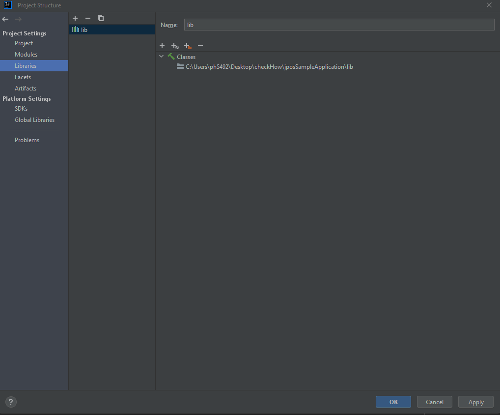
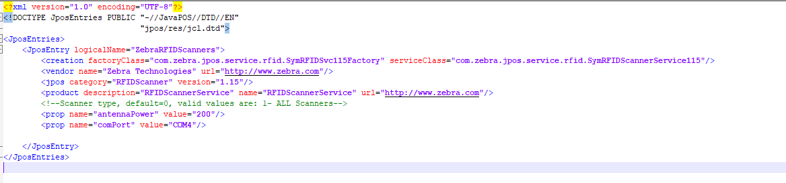

Overview
This section provides step-by-step instructions on developing a JPOS application using the Zebra JPOS driver package with IntelliJ IDEA.
Note: The demo application in this guide is intended for tutorial purposes only and should not be used in production environments.
The JPOS driver package includes the following libraries:
- Lib : Contains the Service Class Library and other JPOS-dependent libraries.
- jpos-rfidscanner-test.jar : Contains a sample application to demonstrate functionality.
- Jpos.xml : A JPOS configuration file that contains the logical device name.
- javaPosTest.bat : A batch file to run the sample application.
- jpos_trace.properties : This file allows users to configure log file settings such as logFilePath and logFileName. The jpos_trace.properties file should be located inside the bin folder.
Creating a Project Using IntelliJ IDEA
This tutorial will assist you in creating a new application project using IntelliJ IDEA.
Creating the Project
Open the IntelliJ IDEA desktop application. If you have a previous project open, close it by selecting Close Project from the File menu.
Under the Quick Start section, select Start a new IntelliJ project.
In the new project wizard, you need to assign an application name, specify the project location, select Java as the language, and choose a build system based on the project type. In this tutorial, we will select IntelliJ as the build system and then choose the appropriate JDK. After making these selections, click the Create button to proceed.

Copy the lib folder from the Zebra JPOS package and add it to your project directory, ensuring it is in the same location as the src folder. Additionally, place the jpos.xml file in the same directory.

Importing the Libraries into the Project. Select Project Structure from the File menu. In the Project Structure window select Libraries click on + it will show the New Project Library select Java and add the location of the lib folder you added to your project and select it. After adding the path, click on Apply , and then OK.

Adding the Zebra JPOS Service Library and Other JPOS-Dependent Libraries
Your project is now ready to use the JPOS API's.
Configuring the jpos.xml File
- Open the jpos.xml file in your preferred text editor.Configure the COM port for the device by specifying the appropriate port number. This step is necessary if automatic discovery is not required.
- Configure the antenna power as needed; otherwise, it will default to 27 dBm.
- Configure GPI enable setting to enable/disable GPI-based inventory. When gpioEnable is set to true, inventory for EPC IDs (with or without a timer) will start reporting tags only when GPI 1 is triggered, and it will stop after the specified timeout (gpioTimeout).
In the jpos.xml file, users can configure the COM port of the device and the antenna power of the reader.
<!-- If the comPort property is not set, the COM port will be automatically discovered -->
<prop name="comPort" value="COM4"/>
<!-- If the antennaPower property is not set, it will default to 27 dBm. -->
<prop name="antennaPower" value="200"/>
<!-- GPI based Inventory – enabled when value is set to "true", disabled when value is set to "false".-->
<prop name="gpioEnable" value="true"/>
<!-- Inventory duration in milliseconds for each trigger.-->
<prop name="gpioTimeout" value="5000"/>
Example of jpos.xml file.
